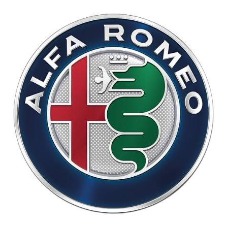

05 / BEYOND WORK
The person
behind the profile.
A serious professional life needs unserious obsessions: football, cars, gadgets, watches, food and the joy of understanding how things are built.
 SamsungGadgets & screens
SamsungGadgets & screensAndroidOpen systems
WindowsWorkhorse energy
HondaEngineering that lasts

Alfa RomeoCars with a pulseSmartphonesAlways comparing
FoodAlways exploring